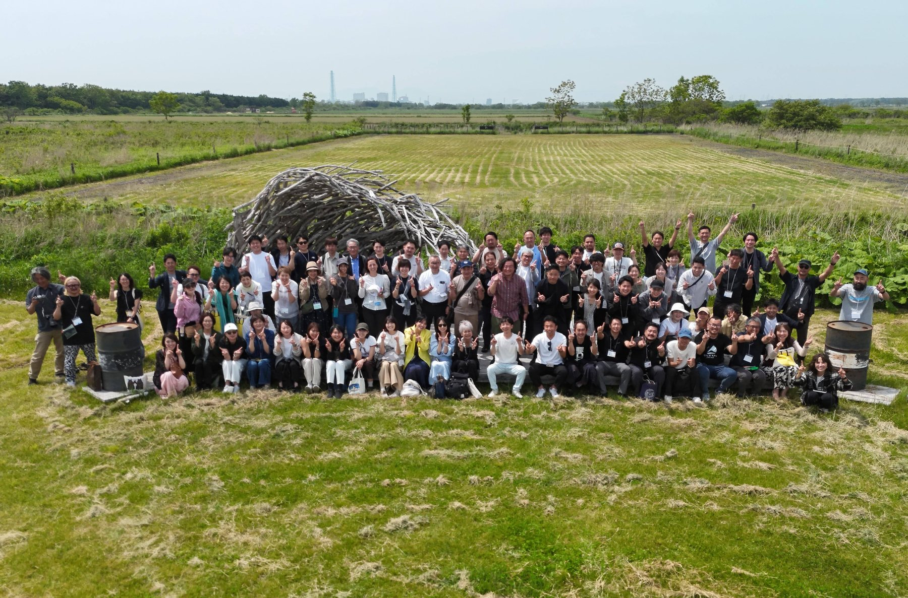
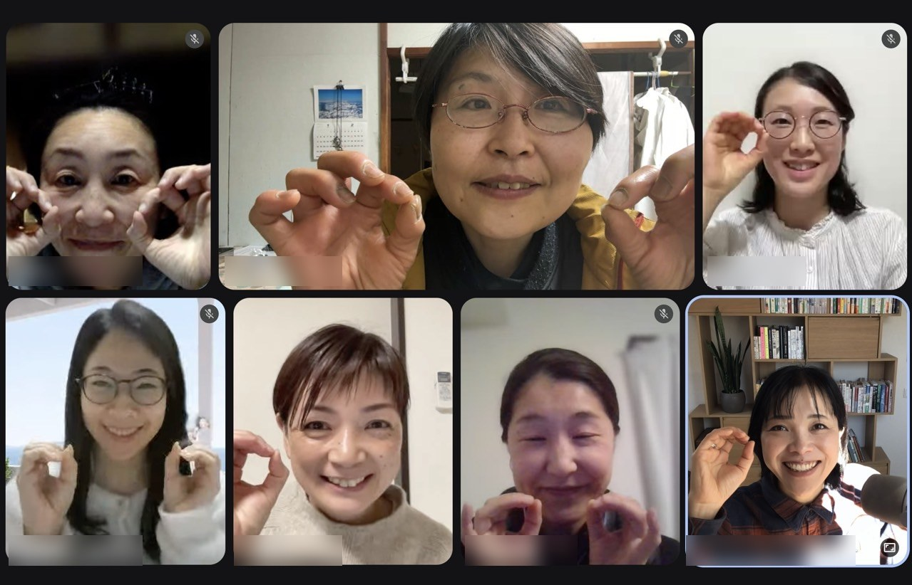
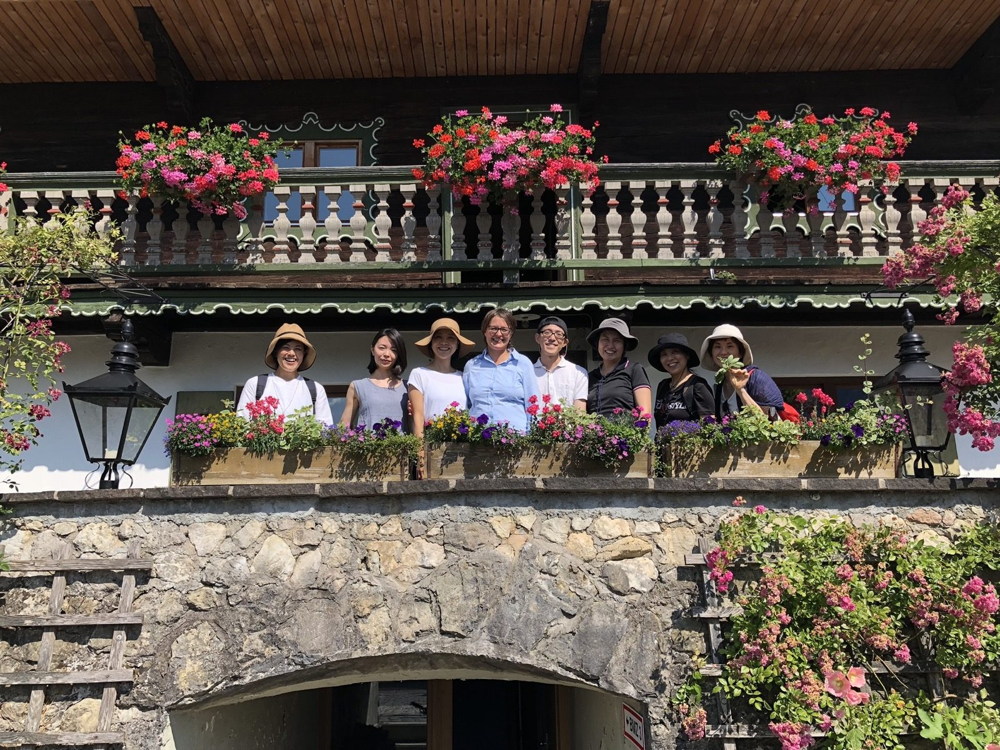
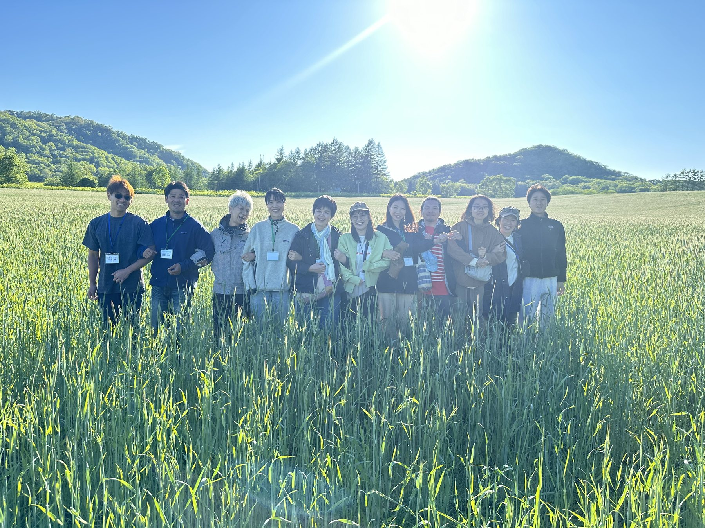
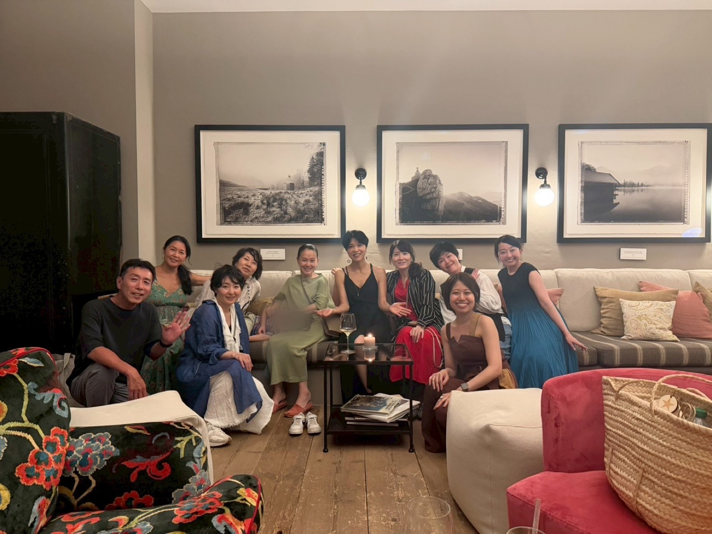
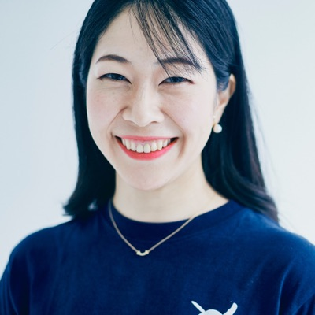
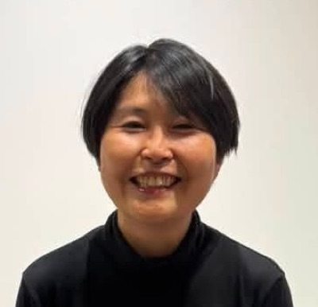
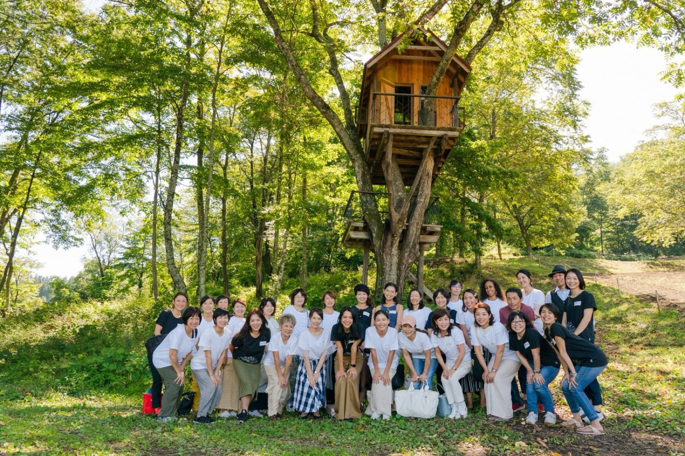

このページの公開は終了しました
ご覧いただき、ありがとうございました。
お問い合わせは school@iob.bio までお送りください。
目次を押すと、その場面から再生されます。
公開は9月23日（水）23:59（日本時間）までです。
まだ迷っている方のために、10月4日（日）19:00から、オンラインの体験会を開きます。
共同学習会（Startup Circle）とグルコン（Leaders Lounge）を、その場で体験していただけます。
このページの公開は終了しました
ご覧いただき、ありがとうございました。
お問い合わせは school@iob.bio までお送りください。
オーガニックを仕事にしたい人、暮らしに根づかせたい人と話していると、ほとんど同じ言葉を聞きます。
「やりたいことは、あるんです」
そのあとに、たいてい「でも」が続きます。でも時間がない。でも自信がない。でもまだ準備が足りない。
だから、私の願いはシンプルです。
この2つのために、場所をつくりました。

私は長いあいだ、この「でも」は知識で埋まると思っていました。もっと学べば、自信がついて動けるようになる、と。
でもね、自分の中にもあるんですが、たくさん学んだ人でも、止まってしまう時がある。
やる気がないわけじゃないんです。夜、机に向かって、書きかけて、「もう少し調べてからにしよう」と閉じる。値段を決めかけて、「私なんかがこの金額でいいのかな」と手が止まる。気づくと、また同じ場所にいる。
そして、止まっても、誰にも気づかれません。誰も「どうしたの?」と聞いてこない。そのまま静かに、止まっていられてしまう。
本を読んだ。講座を受けた。ノートに書き出した。アカウントをつくった。カレンダーに「やる日」を入れた。
どれも間違っていません。オーガニックの知識だって、ちゃんと積み上げてこられた。それでも、途中で止まった。もう一度始めては、また止まった。私も同じです。
反対に、横に誰かいるだけで、拍子抜けするくらい進みます。次の1ヶ月にやることを人の前で言うと、動きます。うまくいかなかった話を聞いてくれる人がいると、もう一度試せます。
足りていなかったのは情報じゃなくて、環境のほうでした。

ただ、ひとことで環境といっても、いま必要な場所は人によって違います。一人で学び続けるのがしんどい方もいれば、何を誰にいくらで届けるかが決まらない方も、もう売っていて次の一手で迷っている方もいます。
だから、3つ用意しました。ここから順番にご紹介します。いまのご自分に近いところだけ読んでも大丈夫です。
やりたいことはあるけれど、いまは事業として動かしていない。あるいは、途中で止まったままになっている。そういう方には、毎日1通のメールレッスン（Daily Letters）があります。
読むだけ、動画見るだけの日があっていいし、メールを開かない日があってもかまいません。現在、法人様向けに300名近くに送付していますが、メールレッスンへの向き合い方は十人十色です。
2ヶ月に一度は、週ごとの問いに自分の言葉で答える「アウトプット月間」があり、月末には仲間の言葉を紹介し合う回もあります。一人で読んで終わりにはなりません。
わからないことは、メールレッスン参加者限定の専用グループ（BAND）で、いつでも聞けます。受講中は、専門家コースの動画もすべて見られます。→ 毎日届くものを見る
起業前の方、一人で始めたばかりの方、フリーランスや一人社長の方には、月1回60分の共同学習会（Startup Circle）があります。
話を聞くだけの時間ではありません。近況を話し、その場で手を動かし、書いたものを読み上げる。12ヶ月かけて、自分の事業の構想を組み立てていきます。

構想がはっきりすると、何を優先して、何を断るかを自分で決められるようになります。発信する言葉も、商品の形も、値段も、そこから迷わずに決まっていきます。→ 12ヶ月の中身を見る
もう商品があって、「どう売るか」で詰まっている方には、月2回のグルコン（Leaders Lounge）があります。
集客のこと、売上のこと、商品づくり、仕入れ、販路。一人で抱えているリアルな悩みを、同じように挑戦している仲間と持ち寄って、その場でアイデアを出し合う場所です。少人数で、90分の本回と、その2週間後の短い中間報告。月に2回集まります。本回では、この3つを回します。
2週間後に、中間報告があります
本回で宣言したことが、次の本回まで4週間あくと、その間にどうしても止まります。だから2週間後に45分だけ集まって、宣言したことがどこまで進んだか、今どこでつまずいているかを確かめます。止まりかけたところで、もう一度動き出せます。
| 本回（90分） | 毎月第4火曜 20:00〜21:30 初回 10月27日（火）／12月のみ12月15日（火） |
|---|---|
| 中間報告（45分） | 毎月第2火曜 20:00〜20:45 初回 11月10日（火） |
時間はすべて日本時間です。

受講生のゆうきちゃんです。ピラティスの講師をしながら、フルオーガニックの酵素ドリンク「Natural FLORA」をつくって販売しています。この商品を置いてくれるお店は、いまでは40店舗以上。取引先を、ゼロから自分で広げてきました。
はじめは、オーガニックの知識もゼロだったそうです。学び直して、商品をつくって、売り先を探して、いまがあります。
商品ができても、話せる相手がいない。値段のこと、原料のこと、伝え方のこと、相談できる人がいない。その状態で一人で続けるのは、正直しんどいです。
ゆうきちゃんの取引先は、グルコン（Leaders Lounge）で広がったご縁からつながっていきました。知識だけでは、40店舗にはならなかったと思います。
去年12月のグルコン（Leaders Lounge）のあと、参加者にアンケートを取りました。「一言で表すと?」という質問への答えが、これです。
一人でやっていると、うまくいかない時期を自分の能力のせいにしがちです。実際は、みんな同じところで詰まっています。それが見えるだけで、次の月も続けられます。

メールレッスンを受けているあいだは、動画視聴ページに入れます
視聴期限が切れてしまった方も、受講中の12ヶ月間（2027年9月末まで）は、専門家コースの動画をすべて見られます。何度でも、どの講座からでも。受けたあとに新しく追加した講座も、内容を新しくした回も、全部入っています。毎日届くメールと動画を合わせて使えるので、資格試験の対策にも、学び直しにもそのまま使えます。3つのどのプランを選んでも付きます。
「途中で止まったままだった」という方は、ここから始められます。試験を受ける方は、動画とクイズをあわせて使えます。
これまで個別にお受けしていた相談も、専門家コースで積み上げた学びも、これからは毎月ひとつの場所で、続けていけます。本来、これだけの時間と場所には、相応の金額がかかります。
でも私は、この「挑戦し続ける環境」を、一部の人だけのものにしたくありません。
だから今回は、モニター価格でご案内します。お願いしたい条件は、アンケートと取材へのご協力、それだけです。お名前の出し方（イニシャル／フルネーム）やお顔出しの有無は、その際に改めて個別に伺います。今すぐ決めていただく必要はありません。
同窓会に来てくださった方は、3つのどの場所を選んでも、最初の1ヶ月は無料です。お支払いは12ヶ月分のままで、1ヶ月長くいられます。
お申し込みフォームの「9月20日の同窓会」で「参加した」を選んでください。
学びが足りないんじゃありません。今の自分に必要な「場」が違うだけです。3つ並べます。近いものを選んでください。

3つは、上下ではありません。必要な場が増えるほど、含まれるものも増えるという関係です。あとからプランを移ることもできます。
初年度は1年分（12ヶ月）でのお申し込みのみ、2年目からは1ヶ月単位でも申し込めます。
3つの場所、全部の土台になっているサービスです。毎日届く1通の中身を、詳しくご紹介します。
毎日届くもの
テキストと、専門家コースの動画。1本あたり1分から15分ほどで、通勤や家事のすきま時間で見られる長さです。
週のリズム
メインの講座動画は月曜から土曜に1本ずつ。日曜は補足の回で、ドイツ視点の話や、現場で使える言い回し、よくある質問をお届けします。短い動画はまとめて、長い講座は何日かに分けて届くので、1通あたりの重さが揃います。
「この1年で、いつ何があるのか」が最初にわかっていると、走り方を決められます。だから地図を、いちばん先に渡します。
およそ半年で、全21講座をひと回りします。そのあと試験期間をはさんで、2クール目に入ります。1年で二度、同じ地図の上を歩きます。一度目で流した話が、二度目で急に自分の仕事とつながる。そういうことが起きます。
講座の資料PDFも付きます。いま学んでいる範囲の資料が、その期間は毎日メールの末尾に置いてあるので、あとから探さなくて済みます。
メールレッスン参加者限定｜質問し放題（専用グループ BAND）
専用のグループの中で、オーガニックのことも、ビジネスのことも、どんなことでも聞いていただけます。メールを読んでいて出てきた疑問も、仕事で詰まったことも、そのまま持ってきてください。
受験は任意です（受験料は別途）。資格を取らない方も、復習クイズは知識の整理にそのまま使えます。
それと、受講中は専門家コースの動画をすべて見られます。受けたあとに追加された講座も、内容を新しくした回も入っています。毎日のメールと動画を、合わせて使ってください。
共同学習会（Startup Circle）は、月1回・60分・少人数のオンラインの集まりです。毎月第3水曜 20:00〜21:00（日本時間）、初回は10月21日（水）です。12ヶ月で12のテーマを順番に進みながら、自分の事業の構想を組み立てていきます。
構想がはっきりすると、何を優先して、何を断るかを自分で決められるようになります。発信する言葉も、商品の形も、値段も、そこから迷わずに決まっていきます。
毎回、AIも使いながらターゲットやコンセプトをまず作ってみて、みんなの前で発表し、意見をもらって磨きます。1年たつと、ターゲットとコンセプト、最初の小さな商品ができていて、実際に発信して売ってみるところまで進みます。
きれいにまとまってから持ってくる必要はありません。というより、まとまらないから持ってくる場所です。

松本有樹さん ／ ライター・カフェ開業を準備中
石川恵都さん ／ 発酵ケーキを開発中 ゆうこさん ／ 農家
ゆうこさん ／ 農家何を、誰に、いくらで。一人だと止まってしまうことが、仲間の前で言葉にすると動き出します。

1年つきあってもらえたら、もちろん嬉しいです。というのも、数ヶ月で中長期の結果を出すのは、正直かなり難しいからです。
どんな挑戦も、結果が出るところまで続けられるかどうかで決まります。そのためには、続けるための土台が要ります。習慣。気持ちが落ちたときに戻してくれるもの。今の時代に合ったやり方。仲間。そして、チャンス。どれも、すぐに手に入るものではありません。だから、1年という単位にしました。
ただ、生活も、仕事の状況も変わります。合わないと思ったら、次の年に続けなくてかまいません。やめた理由の説明も要りません。
ひとつだけ先にお伝えしておくと、お支払いいただいた分の返金は行っていません。この点だけ、申し込む前にご確認ください。プランを上に移るときは差額をお支払いいただく形で、下に移ることもできます（その場合の差額の返金はありません）。
| 銀行振込（日本・ドイツ） | 一括のみ |
|---|---|
| Stripe／PayPal （全プラン共通） | 一括／3回分割（手数料なし・端数は切り上げ） |
※3回分割は、金額が3で割り切れないため、1回あたりを1ユーロ単位に切り上げています（Daily Letters €94×3回＝€282／Startup Circle €180×3回＝€540／Leaders Lounge €284×3回＝€852）。
Stripe・PayPalの決済リンクは、お申し込みフォーム送信後の自動返信メールでご案内します。
お支払いは、お申し込みから3日以内にお願いします。
お支払いのご案内を、ご登録のメールアドレス宛にお送りします。
いま申し込みが混み合っているため、お届けまでに
最大で翌日までかかる場合があります。
お急ぎの方は school@iob.bio までご連絡ください。
始まるまでに、やっておいてほしいことが3つあります。
10月後半に、一緒に始めましょう。
ただいまフォームの自動送信が使えない状態です。
下のボタンを押すと、入力いただいた内容が入ったメールが開きます。
そのまま送信していただければ、確実にお申し込みを受け付けます。
うまく開かない場合は、
お手数ですが school@iob.bio 宛に
お名前とご希望のプランをお送りください。
広めたい。でも、押しつけたくない。
社会にいいことしたい。でも、きれいごとで終わらせたくない。
どちらかを選ばなくて、いいんです。
その先は、一人で出す答えではなく、
みんなでつくっていくものだから。
10月に、一緒に始めましょう。